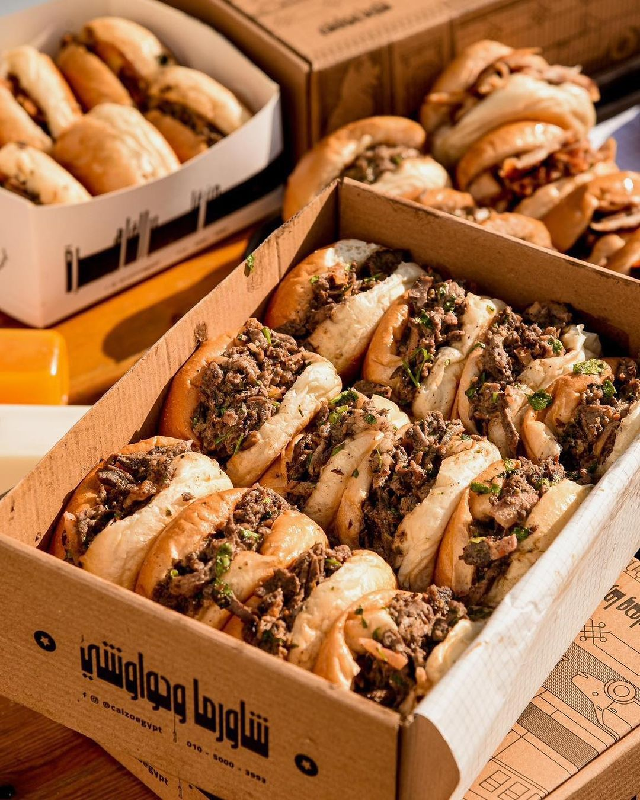

Egyptian Shawerma 🥙

What are the most famous Arab countries for making shawarma?
As a working base, the most famous Arab countries famous for shawarma are Lebanon, Syria, and Egypt, as well as
Turkey, even if it is a Middle Eastern country.
The way shawarma is made in Egypt is different from Syria and Lebanon.
For example, in Egypt, the most famous is meat shawarma, which is eaten in the same bread as a hamburger (Pun
bread)
In Lebanon, the most famous is chicken shawarma, which is eaten in Arabic bread
Prepration
- Half kilo steak, cut into thin slices
- 1 teaspoon paprika
- 1 teaspoon black pepper
- 1 Teaspoon salt
- 1 pinch cinnamon
- 1 teaspoon garlic powder
- 1 teaspoon onion powder
- 1 teaspoon seven spices
- 2 tablespoons white vinegar
- 4 tablespoons oil
- 1 Large onion, sliced
- 2 tomatoes, sliced
- 4 fresh mint leaves
- 1 Fresh parsley
INSTRUCTIONS
- 🥩 In a large bowl, put the meat and spices (salt – black pepper – cinnamon – paprika – garlic powder –
onion powder – seven spices).
- 🍋 Add two tablespoons of white vinegar.
- 🥄 Add two tablespoons of oil.
- 🥣 Stir the whole mixture and then put it in the refrigerator for at least an hour (the more time, the
better).
- 🍳 Put two tablespoons of oil in a frying pan and heat them well (the frying pan must be very hot so that
there is no liquid from the meat).
- 🔥 Put the meat in the pan and stir well for 10 minutes.
- 🔆 After ten minutes of stirring, the meat will have a slightly darker color (as in the picture).
- 🍽️ Place the shawarma in half of the pan and add the onion slices.
- 🍅 Add tomato slices to onions.
- 🍳 Stir the shawarma, onions, and tomatoes, and leave them on the fire for 5 minutes.
- 🌱 Then add 4 leaves of fresh mint and stir in the shawarma.
- 🌿 Add parsley to shawarma.
- 🥄 Stir the parsley with shawarma for 5 minutes.
- 🥙 To make an Egyptian shawarma sandwich, you must put the tahini sauce first, then add the shawarma.
- 🌯 I add shawarma in the sandwich.
👩🍳 Cook's Tip: Marinating the meat for a longer time enhances the flavor and
tenderness of the shawarma. Overnight marination is recommended for the best results.
🌶️ Spice It Up: Adjust the cayenne pepper and seven spices according to your
spice preference. For a milder flavor, reduce the amounts; for a spicier kick, increase them.
🥗 Veggie Delight: Feel free to experiment with additional veggies in your
shawarma sandwich. Sliced bell peppers, pickles, or shredded lettuce can add a burst of freshness and crunch.
🍞 Bread Options: While pita bread is traditional, you can try other flatbreads
or wraps for your shawarma. Whole wheat or gluten-free options are great for dietary preferences.
🍯 Sauce Swap: If you're not a fan of tahini, consider using a yogurt-based sauce
or a garlic aioli for a different flavor twist.